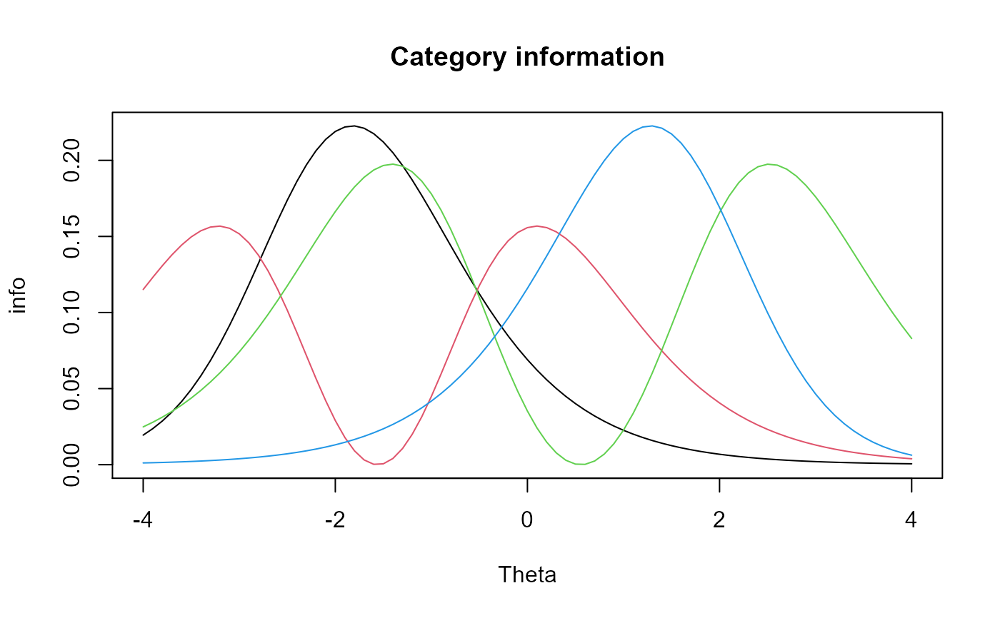
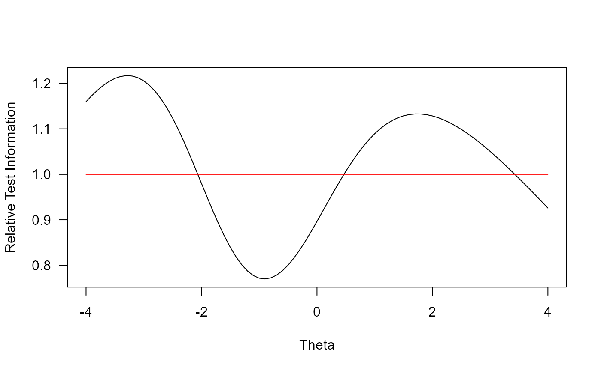

Given an internal mirt item object extracted by using extract.item,
compute the item information.
iteminfo(x, Theta, degrees = NULL, total.info = TRUE, multidim_matrix = FALSE)
Arguments
| x | an extracted internal mirt object containing item information (see |
|---|---|
| Theta | a vector (unidimensional) or matrix (multidimensional) of latent trait values |
| degrees | a vector of angles in degrees that are between 0 and 90. Only applicable when the input object is multidimensional |
| total.info | logical; return the total information curve for the item? If |
| multidim_matrix | logical; compute the information matrix for each row in |
References
Chalmers, R., P. (2012). mirt: A Multidimensional Item Response Theory Package for the R Environment. Journal of Statistical Software, 48(6), 1-29. doi: 10.18637/jss.v048.i06
See also
Author
Phil Chalmers rphilip.chalmers@gmail.com
Examples
mod <- mirt(Science, 1) extr.2 <- extract.item(mod, 2) Theta <- matrix(seq(-4,4, by = .1)) info.2 <- iteminfo(extr.2, Theta) #do something with the info? plot(Theta, info.2, type = 'l', main = 'Item information')# \donttest{ #category information curves cat.info <- iteminfo(extr.2, Theta, total.info = FALSE) plot(Theta, cat.info[,1], type = 'l', ylim = c(0, max(cat.info)), ylab = 'info', main = 'Category information')## Customized test information plot T1 <- T2 <- 0 dat <- expand.table(LSAT7) mod1 <- mirt(dat, 1) mod2 <- mirt(dat, 1, 'Rasch') for(i in 1:5){ T1 <- T1 + iteminfo(extract.item(mod1, i), Theta) T2 <- T2 + iteminfo(extract.item(mod2, i), Theta) } plot(Theta, T2/T1, type = 'l', ylab = 'Relative Test Information', las = 1)# multidimensional mod <- mirt(dat, 2, TOL=1e-2) ii <- extract.item(mod, 1) Theta <- as.matrix(expand.grid(-4:4, -4:4)) iteminfo(ii, Theta, degrees=c(45,45)) # equal angle#> [1] 9.135853e-04 3.804627e-03 1.534609e-02 5.457783e-02 1.280846e-01 #> [6] 1.263872e-01 5.292862e-02 1.479382e-02 3.661942e-03 6.367175e-04 #> [11] 2.659764e-03 1.086462e-02 4.056306e-02 1.103087e-01 1.394001e-01 #> [16] 6.967460e-02 2.076774e-02 5.230188e-03 4.436266e-04 1.857138e-03 #> [21] 7.653659e-03 2.959372e-02 9.036811e-02 1.443711e-01 8.885547e-02 #> [26] 2.887817e-02 7.452148e-03 3.090296e-04 1.295613e-03 5.372790e-03 #> [31] 2.130057e-02 7.105538e-02 1.400859e-01 1.088343e-01 3.962912e-02 #> [36] 1.058186e-02 2.152390e-04 9.033338e-04 3.762362e-03 1.518269e-02 #> [41] 5.409208e-02 1.275949e-01 1.268897e-01 5.340700e-02 1.495328e-02 #> [46] 1.498990e-04 6.295660e-04 2.630098e-03 1.074696e-02 4.017519e-02 #> [51] 1.097011e-01 1.396891e-01 7.024317e-02 2.098631e-02 1.043871e-04 #> [56] 4.386406e-04 1.836367e-03 7.569796e-03 2.929632e-02 8.974279e-02 #> [61] 1.443776e-01 8.947966e-02 2.917186e-02 7.268993e-05 3.055547e-04 #> [66] 1.281094e-03 5.313435e-03 2.107900e-02 7.048336e-02 1.398084e-01 #> [71] 1.094447e-01 4.001273e-02 5.061591e-05 2.128179e-04 8.931970e-04 #> [76] 3.720561e-03 1.502092e-02 5.360938e-02 1.270998e-01 1.273870e-01 #> [81] 5.388842e-02#> [1] 2.073184e-04 8.633775e-04 3.482462e-03 1.238525e-02 2.906603e-02 #> [6] 2.868083e-02 1.201100e-02 3.357135e-03 8.309983e-04 1.444892e-04 #> [11] 6.035756e-04 2.465490e-03 9.204906e-03 2.503218e-02 3.163384e-02 #> [16] 1.581114e-02 4.712787e-03 1.186878e-03 1.006714e-04 4.214372e-04 #> [21] 1.736832e-03 6.715652e-03 2.050708e-02 3.276188e-02 2.016382e-02 #> [26] 6.553273e-03 1.691103e-03 7.012756e-05 2.940112e-04 1.219238e-03 #> [31] 4.833701e-03 1.612448e-02 3.178946e-02 2.469758e-02 8.992970e-03 #> [36] 2.401323e-03 4.884381e-05 2.049920e-04 8.537865e-04 3.445381e-03 #> [41] 1.227502e-02 2.895489e-02 2.879486e-02 1.211956e-02 3.393322e-03 #> [46] 3.401633e-05 1.428663e-04 5.968437e-04 2.438790e-03 9.116887e-03 #> [51] 2.489429e-02 3.169942e-02 1.594016e-02 4.762389e-03 2.368839e-05 #> [56] 9.953996e-05 4.167236e-04 1.717801e-03 6.648164e-03 2.036518e-02 #> [61] 3.276337e-02 2.030547e-02 6.619919e-03 1.649540e-05 6.933901e-05 #> [66] 2.907165e-04 1.205769e-03 4.783421e-03 1.599467e-02 3.172649e-02 #> [71] 2.483609e-02 9.080022e-03 1.148618e-05 4.829441e-05 2.026917e-04 #> [76] 8.443006e-04 3.408672e-03 1.216548e-02 2.884253e-02 2.890771e-02 #> [81] 1.222881e-02# information matrices iteminfo(ii, Theta, multidim_matrix = TRUE)#> [[1]] #> [,1] [,2] #> [1,] 0.0032654333 -0.0008227905 #> [2,] -0.0008227905 0.0002073184 #> #> [[2]] #> [,1] [,2] #> [1,] 0.013598901 -0.0034265121 #> [2,] -0.003426512 0.0008633775 #> #> [[3]] #> [,1] [,2] #> [1,] 0.05485162 -0.013820952 #> [2,] -0.01382095 0.003482462 #> #> [[4]] #> [,1] [,2] #> [1,] 0.19507785 -0.04915373 #> [2,] -0.04915373 0.01238525 #> #> [[5]] #> [,1] [,2] #> [1,] 0.4578137 -0.11535522 #> [2,] -0.1153552 0.02906603 #> #> [[6]] #> [,1] [,2] #> [1,] 0.4517464 -0.11382645 #> [2,] -0.1138265 0.02868083 #> #> [[7]] #> [,1] [,2] #> [1,] 0.18918306 -0.04766842 #> [2,] -0.04766842 0.01201100 #> #> [[8]] #> [,1] [,2] #> [1,] 0.05287762 -0.013323563 #> [2,] -0.01332356 0.003357135 #> #> [[9]] #> [,1] [,2] #> [1,] 0.013088902 -0.0032980078 #> [2,] -0.003298008 0.0008309983 #> #> [[10]] #> [,1] [,2] #> [1,] 0.0022758231 -0.0005734387 #> [2,] -0.0005734387 0.0001444892 #> #> [[11]] #> [,1] [,2] #> [1,] 0.009506809 -0.0023954286 #> [2,] -0.002395429 0.0006035756 #> #> [[12]] #> [,1] [,2] #> [1,] 0.038833480 -0.009784864 #> [2,] -0.009784864 0.002465490 #> #> [[13]] #> [,1] [,2] #> [1,] 0.14498478 -0.036531784 #> [2,] -0.03653178 0.009204906 #> #> [[14]] #> [,1] [,2] #> [1,] 0.39427721 -0.09934594 #> [2,] -0.09934594 0.02503218 #> #> [[15]] #> [,1] [,2] #> [1,] 0.4982588 -0.12554615 #> [2,] -0.1255462 0.03163384 #> #> [[16]] #> [,1] [,2] #> [1,] 0.24903832 -0.06275013 #> [2,] -0.06275013 0.01581114 #> #> [[17]] #> [,1] [,2] #> [1,] 0.07423024 -0.018703779 #> [2,] -0.01870378 0.004712787 #> #> [[18]] #> [,1] [,2] #> [1,] 0.018694291 -0.004710397 #> [2,] -0.004710397 0.001186878 #> #> [[19]] #> [,1] [,2] #> [1,] 0.0015856573 -0.0003995377 #> [2,] -0.0003995377 0.0001006714 #> #> [[20]] #> [,1] [,2] #> [1,] 0.006637979 -0.0016725702 #> [2,] -0.001672570 0.0004214372 #> #> [[21]] #> [,1] [,2] #> [1,] 0.027356520 -0.006893016 #> [2,] -0.006893016 0.001736832 #> #> [[22]] #> [,1] [,2] #> [1,] 0.10577700 -0.026652608 #> [2,] -0.02665261 0.006715652 #> #> [[23]] #> [,1] [,2] #> [1,] 0.32300327 -0.08138706 #> [2,] -0.08138706 0.02050708 #> #> [[24]] #> [,1] [,2] #> [1,] 0.5160263 -0.13002305 #> [2,] -0.1300230 0.03276188 #> #> [[25]] #> [,1] [,2] #> [1,] 0.31759663 -0.08002475 #> [2,] -0.08002475 0.02016382 #> #> [[26]] #> [,1] [,2] #> [1,] 0.10321940 -0.026008170 #> [2,] -0.02600817 0.006553273 #> #> [[27]] #> [,1] [,2] #> [1,] 0.026636258 -0.006711532 #> [2,] -0.006711532 0.001691103 #> #> [[28]] #> [,1] [,2] #> [1,] 0.0011045662 -2.783173e-04 #> [2,] -0.0002783173 7.012756e-05 #> #> [[29]] #> [,1] [,2] #> [1,] 0.004630917 -0.0011668512 #> [2,] -0.001166851 0.0002940112 #> #> [[30]] #> [,1] [,2] #> [1,] 0.019203995 -0.004838826 #> [2,] -0.004838826 0.001219238 #> #> [[31]] #> [,1] [,2] #> [1,] 0.07613474 -0.019183655 #> [2,] -0.01918365 0.004833701 #> #> [[32]] #> [,1] [,2] #> [1,] 0.25397366 -0.06399369 #> [2,] -0.06399369 0.01612448 #> #> [[33]] #> [,1] [,2] #> [1,] 0.5007100 -0.12616378 #> [2,] -0.1261638 0.03178946 #> #> [[34]] #> [,1] [,2] #> [1,] 0.38900703 -0.09801802 #> [2,] -0.09801802 0.02469758 #> #> [[35]] #> [,1] [,2] #> [1,] 0.14164661 -0.03569067 #> [2,] -0.03569067 0.00899297 #> #> [[36]] #> [,1] [,2] #> [1,] 0.037822803 -0.009530204 #> [2,] -0.009530204 0.002401323 #> #> [[37]] #> [,1] [,2] #> [1,] 0.0007693299 -1.938479e-04 #> [2,] -0.0001938479 4.884381e-05 #> #> [[38]] #> [,1] [,2] #> [1,] 0.0032287914 -0.0008135579 #> [2,] -0.0008135579 0.0002049920 #> #> [[39]] #> [,1] [,2] #> [1,] 0.013447834 -0.0033884478 #> [2,] -0.003388448 0.0008537865 #> #> [[40]] #> [,1] [,2] #> [1,] 0.05426756 -0.013673786 #> [2,] -0.01367379 0.003445381 #> #> [[41]] #> [,1] [,2] #> [1,] 0.19334166 -0.04871626 #> [2,] -0.04871626 0.01227502 #> #> [[42]] #> [,1] [,2] #> [1,] 0.4560631 -0.11491412 #> [2,] -0.1149141 0.02895489 #> #> [[43]] #> [,1] [,2] #> [1,] 0.4535425 -0.11427901 #> [2,] -0.1142790 0.02879486 #> #> [[44]] #> [,1] [,2] #> [1,] 0.19089294 -0.04809925 #> [2,] -0.04809925 0.01211956 #> #> [[45]] #> [,1] [,2] #> [1,] 0.05344759 -0.013467177 #> [2,] -0.01346718 0.003393322 #> #> [[46]] #> [,1] [,2] #> [1,] 0.0005357850 -1.350016e-04 #> [2,] -0.0001350016 3.401633e-05 #> #> [[47]] #> [,1] [,2] #> [1,] 0.0022502615 -0.0005669979 #> [2,] -0.0005669979 0.0001428663 #> #> [[48]] #> [,1] [,2] #> [1,] 0.009400776 -0.0023687115 #> [2,] -0.002368711 0.0005968437 #> #> [[49]] #> [,1] [,2] #> [1,] 0.03841294 -0.00967890 #> [2,] -0.00967890 0.00243879 #> #> [[50]] #> [,1] [,2] #> [1,] 0.14359841 -0.036182461 #> [2,] -0.03618246 0.009116887 #> #> [[51]] #> [,1] [,2] #> [1,] 0.39210544 -0.09879872 #> [2,] -0.09879872 0.02489429 #> #> [[52]] #> [,1] [,2] #> [1,] 0.4992917 -0.12580642 #> [2,] -0.1258064 0.03169942 #> #> [[53]] #> [,1] [,2] #> [1,] 0.2510706 -0.06326220 #> [2,] -0.0632622 0.01594016 #> #> [[54]] #> [,1] [,2] #> [1,] 0.07501151 -0.018900633 #> [2,] -0.01890063 0.004762389 #> #> [[55]] #> [,1] [,2] #> [1,] 3.731115e-04 -9.401283e-05 #> [2,] -9.401283e-05 2.368839e-05 #> #> [[56]] #> [,1] [,2] #> [1,] 0.0015678356 -3.950472e-04 #> [2,] -0.0003950472 9.953996e-05 #> #> [[57]] #> [,1] [,2] #> [1,] 0.006563736 -0.0016538632 #> [2,] -0.001653863 0.0004167236 #> #> [[58]] #> [,1] [,2] #> [1,] 0.027056766 -0.006817487 #> [2,] -0.006817487 0.001717801 #> #> [[59]] #> [,1] [,2] #> [1,] 0.10471401 -0.026384768 #> [2,] -0.02638477 0.006648164 #> #> [[60]] #> [,1] [,2] #> [1,] 0.32076818 -0.08082389 #> [2,] -0.08082389 0.02036518 #> #> [[61]] #> [,1] [,2] #> [1,] 0.5160498 -0.13002897 #> [2,] -0.1300290 0.03276337 #> #> [[62]] #> [,1] [,2] #> [1,] 0.31982769 -0.08058691 #> [2,] -0.08058691 0.02030547 #> #> [[63]] #> [,1] [,2] #> [1,] 0.10426913 -0.026272671 #> [2,] -0.02627267 0.006619919 #> #> [[64]] #> [,1] [,2] #> [1,] 2.598160e-04 -6.546579e-05 #> [2,] -6.546579e-05 1.649540e-05 #> #> [[65]] #> [,1] [,2] #> [1,] 0.0010921460 -2.751878e-04 #> [2,] -0.0002751878 6.933901e-05 #> #> [[66]] #> [,1] [,2] #> [1,] 0.004579021 -0.0011537750 #> [2,] -0.001153775 0.0002907165 #> #> [[67]] #> [,1] [,2] #> [1,] 0.01899184 -0.004785370 #> [2,] -0.00478537 0.001205769 #> #> [[68]] #> [,1] [,2] #> [1,] 0.07534278 -0.018984105 #> [2,] -0.01898410 0.004783421 #> #> [[69]] #> [,1] [,2] #> [1,] 0.25192908 -0.06347852 #> [2,] -0.06347852 0.01599467 #> #> [[70]] #> [,1] [,2] #> [1,] 0.4997181 -0.12591387 #> [2,] -0.1259139 0.03172649 #> #> [[71]] #> [,1] [,2] #> [1,] 0.39118867 -0.09856773 #> [2,] -0.09856773 0.02483609 #> #> [[72]] #> [,1] [,2] #> [1,] 0.14301775 -0.036036152 #> [2,] -0.03603615 0.009080022 #> #> [[73]] #> [,1] [,2] #> [1,] 1.809167e-04 -4.558555e-05 #> [2,] -4.558555e-05 1.148618e-05 #> #> [[74]] #> [,1] [,2] #> [1,] 0.0007606764 -1.916675e-04 #> [2,] -0.0001916675 4.829441e-05 #> #> [[75]] #> [,1] [,2] #> [1,] 0.0031925594 -0.0008044285 #> [2,] -0.0008044285 0.0002026917 #> #> [[76]] #> [,1] [,2] #> [1,] 0.013298423 -0.0033508008 #> [2,] -0.003350801 0.0008443006 #> #> [[77]] #> [,1] [,2] #> [1,] 0.05368936 -0.013528096 #> [2,] -0.01352810 0.003408672 #> #> [[78]] #> [,1] [,2] #> [1,] 0.19161632 -0.04828152 #> [2,] -0.04828152 0.01216548 #> #> [[79]] #> [,1] [,2] #> [1,] 0.4542934 -0.11446821 #> [2,] -0.1144682 0.02884253 #> #> [[80]] #> [,1] [,2] #> [1,] 0.4553201 -0.11472690 #> [2,] -0.1147269 0.02890771 #> #> [[81]] #> [,1] [,2] #> [1,] 0.19261370 -0.04853283 #> [2,] -0.04853283 0.01222881 #>iteminfo(ii, Theta[1, , drop=FALSE], multidim_matrix = TRUE)#> [,1] [,2] #> [1,] 0.0032654333 -0.0008227905 #> [2,] -0.0008227905 0.0002073184# }